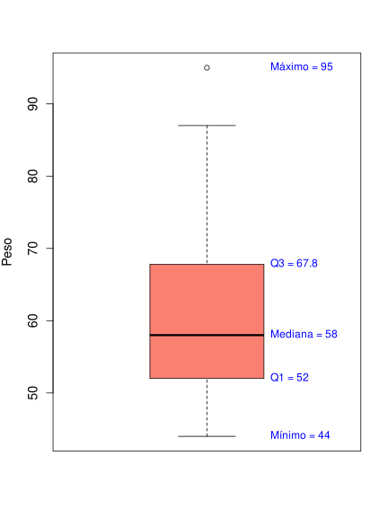

Vamos, agora, definir histograma e boxplot, dois tipos de gráficos usados para dar um aspecto visual às informações de variáveis quantitativas.
Considere uma variável estatística quantitativa de uma população, descrita pelo conjunto numérico \(\{x_1, \dots, x_n\}\) ordenado de forma que \(x_{1} \le \cdots \le x_{n}\). Divida tal conjunto em \(k\) faixas de valores disjuntas
Vamos considerar a variável "Peso", do exemplo apresentado no Capítulo 1, Seção 1 e cuja tabela de dados pode ser vista aqui. Vamos dividir seus dados em 6 faixas:
A tabela a seguir descreve cada faixa, apresentando o número de observações, a frequência relativa e a densidade de frequência.
| Faixas | Observações | Frequência relativa | Densidade de frequência |
|---|---|---|---|
| \([40, 50)\) | 8 | 0.16 | 0.016 |
| \([50, 60)\) | 21 | 0.42 | 0.042 |
| \([60, 70)\) | 10 | 0.20 | 0.020 |
| \([70, 80)\) | 6 | 0.12 | 0.012 |
| \([80, 90)\) | 4 | 0.08 | 0.008 |
| \([90, 100)\) | 1 | 0.02 | 0.002 |
Você pode fazer essa tabela em R, utilizando os comandos
breaks <- seq(40, 100, by = 10)
classes <- cut(Peso, breaks = breaks, right = FALSE, include.lowest = TRUE)
n <- table(classes)
freq_rel <- prop.table(n)
amplitude <- diff(breaks)[1]
densidade <- freq_rel / amplitude
tabela <- data.frame(
faixa = names(n),
n = as.vector(n),
freq_rel = round(as.vector(freq_rel), 4),
densidade = round(as.vector(densidade), 4)
)
print(tabela)Com base nas informações apresentadas na tabela acima, podemos construir o histograma da variável Peso.
Você pode fazer esse gráfico em R, utilizando os comandos
h <- hist(Peso,
probability = TRUE,
right = FALSE,
breaks = breaks,
col = "lightblue",
border = "white",
main = "",
xlab = "Peso",
ylab = "Densidade",
ylim = c(0, max(density(Peso)$y) * 1.4))
rel_freq <- h$counts / sum(h$counts) * 100
labels <- paste0(round(rel_freq, 1), "%")
text(x = h$mids,
y = h$density,
labels = labels,
pos = 3,
cex = 0.9,
col = "black")Considere uma variável estatística quantitativa de uma população, descrita pelo conjunto numérico \(\{x_1, \dots, x_n\}\) ordenado de forma que \(x_{1} \le \cdots \le x_{n}\). Sejam \(\theta\), \(Q_{1}\), \(Q_{3}\) e \(\text{IQR}\), respectivamente, a mediana, o primeiro quartil, o terceiro quartil e o intervalo interquartil. Defina o ponte de corte inferior como sendo o valor \(Q_{1} - 1,5\text{IQR}\) e, similarmente, defina o ponte de corte superior como sendo o valor \(Q_{3} + 1,5\text{IQR}\). Defina também os valores extremos com sendo o conjunto
O boxplot da variável Peso é o seguinte gráfico: 
Para fazer esse gráfico em R, pode-se utilizar os seguintes comandos
quartis <- quantile(Peso, type=1)
boxplot(Peso,
ylab = "Peso",
col = "salmon",
border = "black",
cex.axis = 1.2,
cex.lab = 1.2,
cex.main = 1.4)
text(x = 1.2, y = quartis[1], labels = paste0("Mínimo = ", quartis[1]), pos = 4, col = "blue")
text(x = 1.2, y = quartis[2], labels = paste0("Q1 = ", quartis[2]), pos = 4, col = "blue")
text(x = 1.2, y = quartis[3], labels = paste0("Mediana = ", quartis[3]), pos = 4, col = "blue")
text(x = 1.2, y = quartis[4], labels = paste0("Q3 = ", quartis[4]), pos = 4, col = "blue")
text(x = 1.2, y = quartis[5], labels = paste0("Máximo = ", quartis[5]), pos = 4, col = "blue")